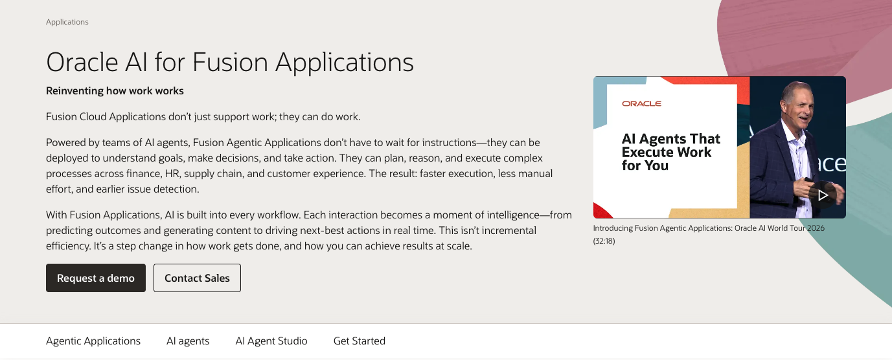
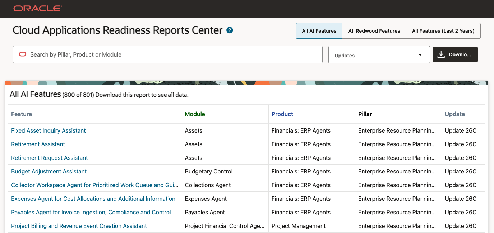
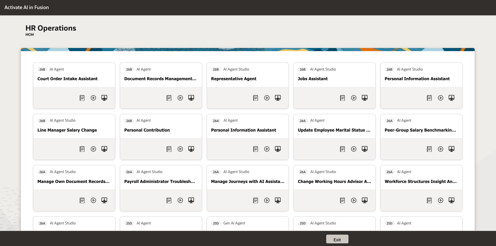

01 / 45
Oracle AI Adoption Workshop
Enable & Test
Hands-on Exercises
AI Agent Studio & Agents
Enable & Test
Hands-on Exercises
AI Agent Studio & Agents
Use these resources to research, prioritize, and activate Fusion AI in your own environments.
RESEARCH

Best for Executives
Review Oracle's Fusion AI vision, agentic applications, demos, and executive-level value story.
Executive alignment and an initial shortlist of priority AI use cases.
PRIORITIZE

Best for Admins
Filter AI features by release and product, export the inventory, and open setup documentation.
Clear readiness view: availability, dependencies, roles, and enablement steps.
ACTIVATE

Best for Multiple Roles
Use role-based guidance and activation guides across business, IT, admins, and implementation teams.
Practical activation plan with owners, steps, and adoption resources.
Google Chrome Incognito > Demo Environment
Note: The password to our demo environment changes daily. Please plan to use your company’s staging environment after this workshop.
Tools > AI Agent Studio
You can give access to AI Agent Studio by assigning predefined duty roles to job roles. Also, make sure to complete these prerequisites:
After your agents are created and ready for use, provide access for users to interact with the AI agents. For information, see How can I give users access to AI agents?
Assign predefined product-specific duty roles to the appropriate job roles, and make sure permission groups are enabled. You can give people access to configure AI agents in all or specific products.
Monitor and gain insights into how your AI agents are performing, and also evaluate the agents for accuracy. You can also track the interactions with your agents, understand real-world usage patterns, identify common errors, and measure overall performance.
Steps to Enable | Metric Definitions
Tools > AI Agent Studio > Monitoring and Evaluation > Monitoring
You can now measure the business impact of your AI agent teams using the Value dashboard. This visual dashboard provides an overall view of your AI fleet, performance by Oracle Fusion Cloud Applications products, and individual agent team metrics. These metrics are designed to help you estimate and visualize the tangible ROI of your AI initiatives. Track deployment, usage, and estimated time and cost savings for your published agent teams in one visual view.
The dashboard generates reports for review with automatically populated performance data. You can filter the data displayed on the dashboard by date ranges, agent teams, or business functions.
By monitoring key indicators, such as Total Time Savings, Total Cost Savings, Total Usage, and Total Agents, organizations can move beyond qualitative feedback to accurately quantify how AI agents drive operational efficiency and user satisfaction.
Tools > AI Agent Studio > Monitoring and Evaluation > Value
The Procurement Policy Advisor agent provides users with seamless access to procurement policies, allowing them to ask questions about products and services while ordering what they need to get their jobs done.
In this exercise, you will use Oracle Fusion Sales to review an opportunity, use Deal Advisor for AI-generated insights, and explore agent-driven recommendations for account and opportunity management.
Estimated Time: 10 minutes
By the end of this lab, you will be able to:
Log in to Oracle Cloud with the credentials provided by the instructor.
User ID: <user ID to be provided>
Password: <password to be provided>
Upon returning from the client meeting, verify that the sales process is running smoothly.
As a sales representative, when you login to get your day started, you are quickly brought to your list of opportunities. You see a new opportunity in your list for a fitness center expansion build.
Fitness Center Expansion - Tandy Fitness Club
The opportunity includes a quick built-in AI summary. Use Deal Advisor to request a deeper summary and identify risks that may arise during the sales cycle.
Deal Advisor
The Deal Advisor is a built in AI Agent that pulls information from the individual deal as well as the deal library in order to provide accurate steps and details
Give me a brief overview of this opportunity
The insights are brought together in a pop-up. This curated set of insights makes AI accessible for sales users by providing win factors, AI explanations, and recommended next steps.
The application is making the artificial intelligence (AI) very user-friendly. You can click to generate AI explanations, which provides you with both the positively impacting factors for why you may win this deal, as well as, recommended next steps taking out all the guess work from the selling process.
What risks may arise?
Users can continuously prompt the agent to get more details. We are specifically looking to see what risks may pop up.
It can analyze other deals from the past that have fallen through and is able to generate best responses based on the actions that were taken in those cycles.
That was looking at an individual sales opportunity. Now, let’s use the first agentic app of the day to analyze all your sales opportunities.
Sales Command Center helps sales leaders manage a territory by monitoring account activity, highlighting changes or risks, and recommending next steps for each account and opportunity.
Sales Command Center uses AI agent teams to monitor your territory, surface risks and opportunities, and drive smarter action across accounts. The tool provides summaries, risks, and next steps for each opportunity.
Multi-Use Commercial Build
AI is constantly analyzing each opportunity and can provide specific recommendations like a pre-typed email.
The tool auto-generates an email based on prior communications and next steps laid out in the business plan.
With many agents working together, lots of different actions can be taken from the command center. Users can create appointments, set reminders, and send emails.
When appointments are set, the tool will automatically generate content to discuss with the customer, depending on the type of appointment.
The agent can pull in customer stakeholders, generate a pre-meeting checklist, generate discovery questions, and identify next steps and possible gaps. This information is centralized in the command center, so users do not need to leave the application or ask separate LLMs.
You have reviewed an opportunity, prompted Deal Advisor for a summary and risks, explored territory-level Sales Command Center insights, and reviewed AI-generated communication and meeting-preparation content.
Sales Automation uses embedded AI and agentic apps to help sales users move from individual opportunity review to territory-level execution with guided insights, risk identification, and recommended actions.
Oracle Fusion Human Capital Management (HCM) uses advanced AI features to make everyday HR tasks simpler and more efficient. With Oracle AI for HCM, you can finish work faster, make more informed decisions, and improve employee experiences, all while keeping sensitive information secure. These AI tools help streamline key HR activities like recruiting, managing talent, supporting career growth, and delivering HR services more effectively.
Estimated Time: 10 minutes
Now that we’ve updated the sales opportunity, we need to provide feedback for the sales reps that had an impact with the customer. Use generative AI to draft feedback comments to help improve employee performance and engagement.
Now that Amy ensured her sales opportunities are running smoothly, she needs to keep up with her managerial responsibilities. You are easily able to find areas you’re looking for within the system utilizing the navigation tools built into the UI.
Using the Global Search bar at the top, enter Feedback Center - Me and click to navigate to the Feedback Center
Once in the feedback center, you’ll be able to see the history of feedback given to you, or feedback that you’ve given to others. This allows for a one stop shop for users to view all their related feedback.
There are different options when it comes to who gets feedback, and how it’s viewed by the business. Since this is part of the unified suite, it’s easy to find your team.
Utilizing the built in AI, it makes it much easier to issue feedback. Instead of having to type an entire paragraph, you can provide a couple of key words or phrases and the built in AI tool will generate the rest.
Enter your feedback (you type whatever) or the text below into the feedback text box
Great job with SharpSpring Fitness! You showed ability to understand their needs and know our products well.
The AI tool will wait for final approval from the user before posting the feedback. This is important because it ensures that the user has final say over what the AI generates.
The sales VP values positive feedback but also likes to give his team constructive feedback so they are always learning and growing. He notices the generated feedback does not include anything constructive, so he needs to add more
Add in additional context
improving ability to always set next steps to drive towards progression
Congratulations!! You have completed the Human Capital Management set of embedded AI flows.
Click the Home icon on the ribbon at the top of the page to return to the main springboard page.
By following these steps, you successfully walked thru the AI capabilities available to an employee within Fusion Human Capital Management (HCM) that will enhance their efficiency and provide them a more engaging experience. Embrace the future of HCM with the power of AI!
The Benefits Policy Advisor is your AI-powered digital assistant for company benefits, designed to deliver instant, reliable guidance on your eligibility, plan coverage, and compliance requirements. This digital worker takes the complexity out of benefits by quickly retrieving policy details and explaining program rules—directly from your company’s own documentation.
Steps to Enable | Activation Guide | Journeys | Task Types
Note: In your own environment, Click Publish. Then confirm that the agent's status is Published.
Note: In your own environment, Enter in a Name, Status and Description and then select Save.
Note: In your own environment, upload your company’s benefits document and select Save.
Note: If this was your live environment, you would click on the Publish to save the changes. Don’t do this step for the hands-on demo as the agent is already published.
The Benefits Policy Advisor is your AI-powered digital assistant for company benefits, designed to deliver instant, reliable guidance on your eligibility, plan coverage, and compliance requirements. This digital worker takes the complexity out of benefits by quickly retrieving policy details, and explaining program rules—directly from your company’s own documentation.
The Lead Advisor Agent is an AI-powered smart agent designed to help Sales Users interact directly with a lead’s context without navigating across multiple tabs or reports. By using Generative AI, the assistant intelligently responds to natural questions about a lead by analyzing a wide range of related data, including campaign history, recent activities, orchestration details, notes, and even custom fields. It can be launched via a smart action on any lead record. Whether you're preparing for a call, planning your next outreach, or qualifying a lead, the assistant helps you get precise answers instantly.
Steps to Enable | Activation Guide
The Lead Advisor Agent is an AI-powered smart agent designed to help Sales Users interact directly with a lead’s context without navigating across multiple tabs or reports. By using Generative AI, the assistant intelligently responds to natural questions about a lead by analyzing a wide range of related data, including campaign history, recent activities, orchestration details, notes, and even custom fields. It can be launched via a smart action on any lead record. Whether you're preparing for a call, planning your next outreach, or qualifying a lead, the assistant helps you get precise answers instantly.
Use the Purchase Orders to Sales Orders Converter to automatically convert a purchase order from a PDF file into a sales order. This AI agent will take the PDF files you upload that contain your purchase orders and convert them into sales orders.
Agent benefits:
Steps to Enable | Activation Guide
18. Click Cancel.
19. Click the Home icon
Use the Purchase Orders to Sales Orders Converter to automatically convert a purchase order from a PDF file into a sales order. This AI agent will take the PDF files you upload that contain your purchase orders and convert them into sales orders.
Agent business benefits:
This section will give you a simple 3-prompt workflow to build your Sales Command Center.
Create a sales workspace that helps me identify which opportunities need attention first.
Start with one section called “Priority Opportunities”, using any existing published workflow that is relevant.
Show the workflow’s opportunity list and priority explanations when the application opens. Let me use Ask Oracle to explore these opportunities and understand recommended next steps.
I want the app to be with 2 columns layout.Add a “Strategic Accounts” section below “Priority Opportunities” to help me identify which customer accounts deserve attention.
Show up to five accounts with:
- Account name.
- Key risks, growth opportunities, or approaching renewals, where information is available.
- A short explanation of why each account deserves attention.
- A suggested next step supported by the available information.
Let me use Ask Oracle to explore these accounts, understand the recommendations, and prepare for customer conversations.
Use actual available Sales data and clearly indicate missing information. Keep the experience informational, with business records unchanged and no emails sent.
Keep the existing Priority Opportunities section working. Use English throughout and prepare the enhanced application for preview.Add a “Pre-Meeting Briefs” section type multicard Priority Opportunities section, to help me prepare for for upcoming customer meetings.
Show all her meetings scheduled within the next seven days, calculated from the current system time. Use actual Sales meeting data and the existing published meeting-preparation capability.
When the application opens, show a card for each meeting with:
- Meeting subject, date and time.
- Customer account and related opportunity, where available.
- Contacts, owner and location.
- A tailored preparation brief based on the meeting’s agenda and available information.
- Three suggested customer questions and three practical next steps.
Keep all information directly visible using standard supported cards, without expandable controls or time-zone captions. Clearly identify missing information and distinguish no matching meetings from a retrieval problem.
Let me use Ask Oracle to prepare for a specific meeting, explore the suggested questions, and draft a follow-up message for review.
Keep the other sections working. Use English throughout, leave business records unchanged, and do not send emails.
If there is any existing workflow related to this that you can use, please use it.In the app builder, select the brain icon to open Ask Oracle and submit this optional prompt:
Do you have any idea for a section that could help with comparing profitability percentages, like an advisor for opportunity profitability?The builder will ask which agent or published workflow to use for the profitability section. When it does, ask it to find a suitable agent with this follow-up prompt:
Please search for a related agent that may be helpful for this